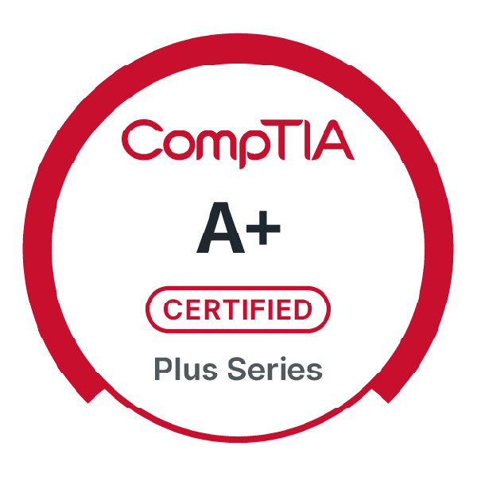
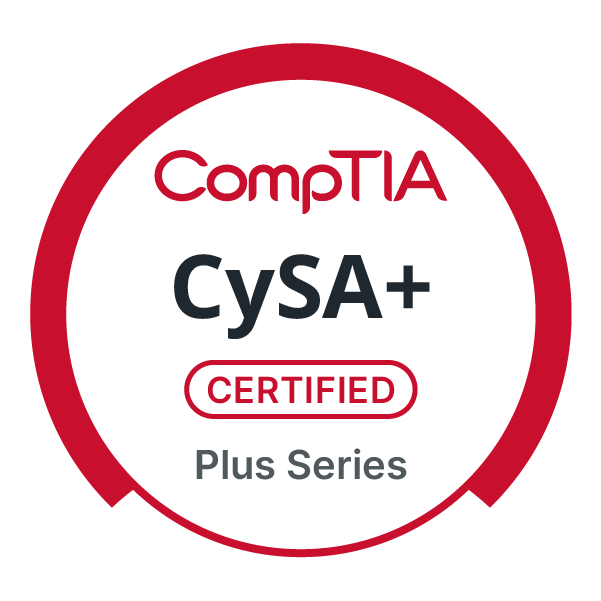

Operator File
Resume
Experience
Download Resume
Entrusted with leading missions where precision, discipline, and sound judgment were critical. Planned and executed complex operations in dynamic environments, managing advanced weapons and targeting systems while maintaining constant situational awareness. Worked closely with ground forces and command teams to provide reconnaissance and close air support, translating strategy into real-time action. The role demanded calm decision-making under pressure, accountability for crew and aircraft, and an unwavering commitment to mission success and safety.
Responsible for the maintenance, readiness, and safety of one of the Army's most advanced combat aircraft. Oversaw inspections, troubleshooting, and repairs to ensure the aircraft remained mission capable at all times. Worked directly alongside pilots and maintenance teams to diagnose mechanical issues, manage flight line operations, and prepare the aircraft for complex missions. The role required technical precision, attention to detail, and a deep sense of ownership — knowing that aircrew safety and mission success depended on the quality of every inspection and repair.
Education
Pursuing a BSIT with a focus on cybersecurity, building technical depth in network security, systems administration, and threat analysis — directly aligned with a career in security operations and defense.
Built a broad academic foundation across multiple disciplines, enhancing critical thinking, communication, and problem-solving skills that support continued success in technology and cybersecurity.
Skills
Professional Skills
System Administration
Networking
Risk Mitigation
Threat Detection
Incident Response
Vulnerability Management
SIEM
Log Analysis & Monitoring
Malware Analysis
Network Traffic Analysis
Endpoint Security & EDR
Penetration Testing Fundamentals
Access Control & Identity Management
Security Compliance & Frameworks
Languages
HTML
CSS
JavaScript
Python
Certifications

